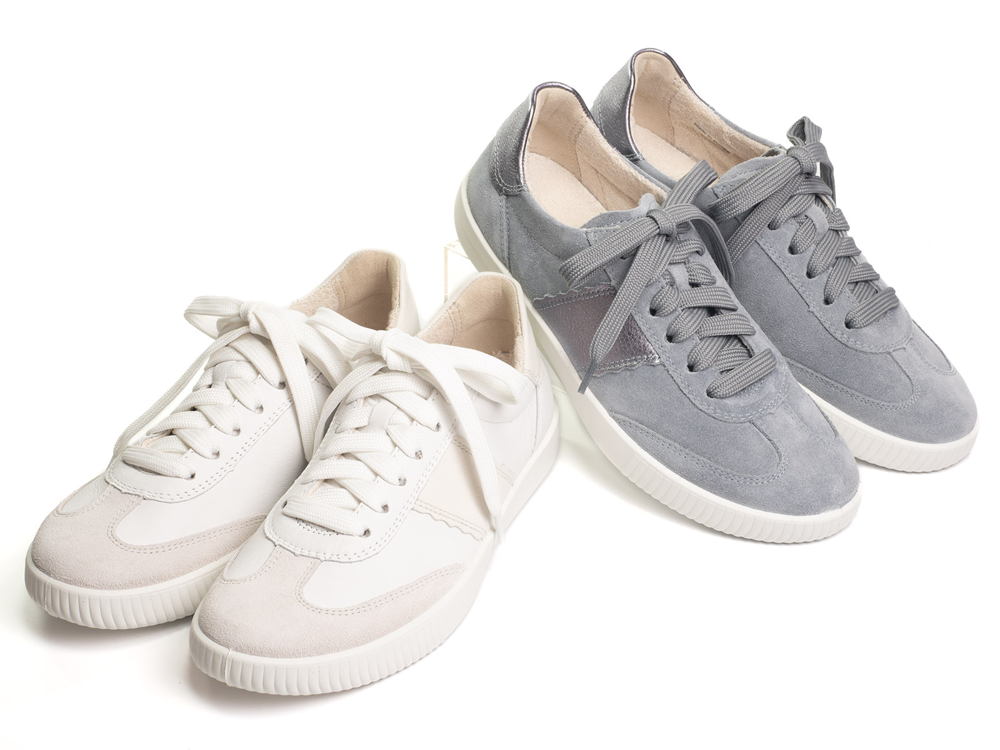
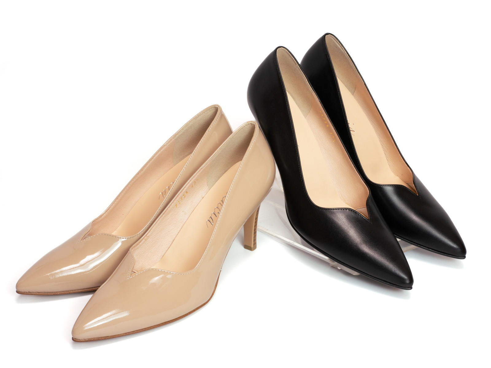
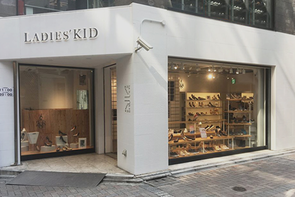
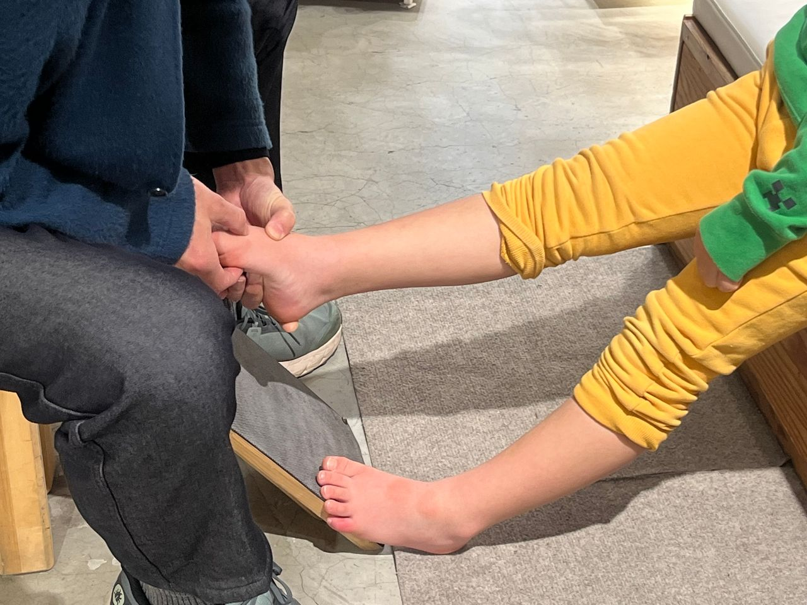
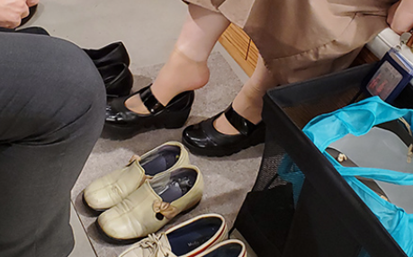
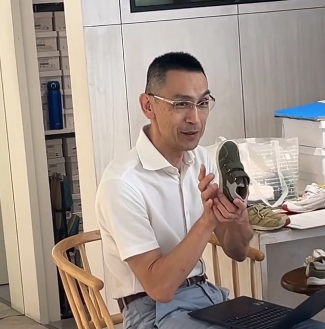
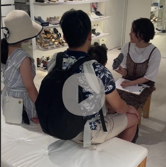

足が小さいのは、あなたのせいではありません。
合う靴に、出会えていなかっただけ。
創業75年・シューフィッター在籍の専門店が、今日こそ終わりにします。



正直に答えてみてください。当てはまるほど、まだ"本当に合う靴"に出会っていない証拠です。
「靴が小さいから痛い」のではありません。「靴が合っていないから」です。
バンドエイドやテープが手放せない。外出のたびに痛みと戦い、帰宅後は足を見るのが怖い。
「バンドエイドを3枚貼らないと歩けなかった」
大きめの靴で足が前に滑り、爪が靴先に当たり続ける。爪が黒くなったり、割れたり、巻き爪になる。
「爪が黒くなって、夏もサンダルが履けなかった」
踵が浮いてパカパカする靴は歩行が不安定になり、足腰への余計な負担で夕方には足がむくむ。
「少し歩いただけで足がパンパンになる」
合わない靴を長年履き続けると足の変形が進む。痛みが慢性化し、歩くこと自体がストレスになる。
「外反母趾が悪化して、選べる靴がさらに減った」
足元のバランスが崩れると膝・腰・肩まで影響する。慢性痛の根本が「靴」だったケースは少なくない。
「整体に通っていたが、靴を変えたら腰痛が軽くなった」
「どうせまた足が痛くなる」と外出が億劫に。旅行は終日歩くため、靴の問題が旅全体への不安になる。
「旅行先で歩くのがつらくて、家族に申し訳なかった」
これらはすべて、靴が合っていないために起きていることです。
あなたの足が悪いのではありません。
我慢の積み重ねは、見えないところで大きな損失になっています。
「足元は諦めた」という言葉が口癖になっていませんか。服や髪を頑張っても、足元だけはずっと妥協している。靴一足で気分が変わること、まだ信じられますか？
冠婚葬祭・就職活動・取引先訪問・子どもの入学式。大切な場面で「履ける靴がない」という焦りが、本来の自分らしさを出せない原因になっています。
外反母趾・靴擦れ・腰痛。合わない靴を長年履き続けた代償は、気づいたときには取り返しのつかない変形や慢性痛として現れます。後悔してからでは遅い。
返品を繰り返すたびに消える時間と送料。何軒回っても見つからない徒労感。その「無駄な支出」を10年分計算したら、いくらになりますか？
「30年以上こうやって生きてきた、今更変わらない」
— そう思っていた方が、来店後こう言います
「もっと早く来ればよかった」

「需要があっても、規模が小さければ作らない」
それがメーカーと量販店の論理です。
ABCマート・百貨店でさえ22cm以下の婦人靴はほぼ取り扱いがありません。ネットで「小さいサイズ」と書かれていても、子ども用の木型であることが多い。
あなたが何年も苦労してきたのは、市場の構造的な問題のせいです。足のせいでも、あなたのせいでもない。
「どこに行っても見つからなかった」という方が選ぶ理由が、4つあります。

パンプス・ブーツ・フォーマル・カジュアル・サンダル。オーダーパンプス（i/288）は19.5cmからご用意。他の専門店が「在庫が少ない」と言われる中、私たちは妥協を許しません。

75年間、小さいサイズの足の悩みだけと向き合い続けてきた。その積み重ねが、どの靴屋にも真似できない接客力の源です。

足長・足幅・足囲を計測し、デジタル計測で足底圧・アーチの状態も把握します。ネットで何度も失敗した本当の理由がわかります。※ 足の状態やご希望に応じて計測や足チェックを行っています

百貨店バイヤーも認めた品質・デザイン。大人の女性として足元でも格を表現できる靴が、20cmから揃います。
同じ「靴屋」でも、できることはまったく異なります。
| 比較項目 | 量販店 (ABCマート等) |
ネット (Amazon・楽天) |
レディースキッド |
|---|---|---|---|
| 20〜22cmの婦人靴 | ✕ ほぼなし | △ キッズ混在 | ◎ 常時300種類以上 |
| 大人用木型の設計 | ✕ 子供靴を案内されることも | ✕ 判断できない | ◎ 全品 大人女性向け |
| 足の計測・フィッティング | ✕ 足長のみ | ✕ 不可 | ◎ 足長・足幅・足囲＋デジタル計測 |
| シューフィッター在籍 | ✕ なし | ✕ なし | ◎ 資格保有者が対応 |
| フォーマル〜カジュアル対応 | △ カジュアル中心 | △ バラつきが大きい | ◎ 冠婚葬祭対応も在庫あり |
| 試着・当日購入 | △ 在庫があれば | ✕ 不可 | ◎ 当日OK |
| 返品の手間・ストレス | — | ✕ 毎回発生 | ◎ 試着してから決める |
ずっと諦めていた方が、はじめて足の合う靴と出会ったときの体験談です。
「試着した瞬間、踵が浮かなかった。泣きそうになりました」
シューフィッターの方に計測してもらったら、今まで1cm以上大きいサイズを履いていたことがわかって。試着した瞬間、踵が全然浮かない。20年間、これを知らなかったんだと思って、泣きそうになりました。
「一日中歩いても靴擦れゼロ。あんな日が来るとは思わなかった」
ずっと子供靴で冠婚葬祭を乗り越えてきました。こちらで黒パンプスを選んでもらって、一日中歩いても靴擦れが一ヶ所もなかった。式が終わって電車の中で、また泣いてしまいました。
「"どうせ"を言わなくなった日が来るとは思わなかった」
ずっと雑誌を見るたびに「どうせ私のサイズはない」って口に出してた。こちらに来てから、なんでも試せる。選べる。そんな当たり前のことが当たり前じゃなかったんだって気づいた時、友達に電話しました。
※ ご来店者の体験をもとに作成しています。実際の声は随時更新予定です。


池袋に店を構えて75年。私たちが向き合い続けてきたのは、「足が小さい」ただそれだけで、当たり前の選択肢から排除されてきた女性たちの現実でした。
「22cmを探して何十年、こんなに選べる場所があるとは知りませんでした」
「子供靴で妥協することが当たり前になっていたけど、初めて"大人の靴"を履けた気がした」
足が小さいことはコンプレックスではなく、個性です。
その足に似合う靴を、300種類以上の中から一緒に探させてください。

希望日時・お名前・足のおおよそのサイズをお伝えください。当日のご来店もお電話一本で可能な限り対応します。
足長・足幅・足囲を計測し、デジタル計測で足底圧・アーチの状態も確認します。「今まで合わなかった本当の理由」が初めてわかります。※ 足の状態やご希望に応じて計測や足チェックを行っています
用途・デザイン・ライフスタイルに合わせて複数ご提案。「またデザインが少ない」とは言わせません。
インソール・パッドで最終調整。「痛くない・脱げない・前滑りしない」を確認してからお渡しします。

「どうせ変わらない」と思っていた方ほど、
来店後に「もっと早く来ればよかった」と言います。
いつでもお気軽にどうぞ。当日ふらりとお立ち寄りいただけます。
フィッティングカウンセリングご希望の方はお電話でご予約いただくとスムーズです
営業時間：11:00〜20:00（年中無休）
〒171-0022 東京都豊島区南池袋 ／ 池袋駅よりすぐ（B1F）